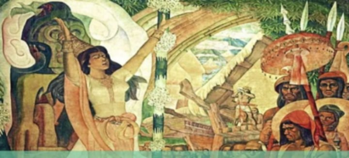

Paniniwala at Pananampalataya

Paniniwala
Ang paniniwala ay mga ideya, pananaw, o kaisipan na tinatanggap ng isang tao o pangkat bilang bahagi ng kanilang pag-unawa sa mundo.
Pananampalataya
Ang pananampalataya ay mas malalim na pagtitiwala o paniniwala na kadalasang may kaugnayan sa relihiyon at espirituwalidad.
Kahalagahan ng Paniniwala at Pananampalataya
Ang mga paniniwala at pananampalataya ay may malaking papel sa paghubog ng kultura, tradisyon, at pagkakakilanlan ng isang pangkat ng tao.
Bahagi ng Kasaysayan
Makikita sa mga paniniwala ng mga tao ang kanilang paraan ng pamumuhay, pagpapahalaga, at pakikitungo sa kapwa.
Epekto sa Kultura
• Nagbibigay ng gabay sa paggawa ng desisyon.
• Nagpapatibay ng pagkakaisa ng isang komunidad.
• Nagpapasa ng mga tradisyon mula sa isang henerasyon patungo sa susunod.
Pagkakaugnay sa Kasaysayan
Ang pag-aaral ng paniniwala at pananampalataya ay tumutulong upang mas maunawaan ang mga dahilan kung bakit nabuo ang iba't ibang kultura at pamayanan.
Sa pag-unawa sa paniniwala at pananampalataya ng mga tao, mas nakikilala natin ang kanilang kasaysayan, kultura, at pagkatao.
Mga Pangunahing Relihiyon sa Mundo
| Kristiyanismo | Islam | Hudaismo | Budismo |
|---|---|---|---|
| Krus | Koran | Torah | Ginoong Buddha |
| Bibliya | Moske | Sinagoga | Reincarnation |
| Simbahan | Crescent Moon and Star | Menorah | Nirvana |
| Simbang Gabi | Ramadan | Sabbath | Dharma |
| Papa (Pope) | Praying Mat | Kosher | Walong Dakilang Landas |
| Rosaryo | Pagdarasal isang beses sa isang araw | Rabbi | Monghe |
| Pasko | Eid al-Fitr | Kandila ng Hanukkah | Monasteryo |
| Kumpisal | Halal | - | - |
| - | Imam | - | - |
| - | Hindi nakain ng baboy | - | - |
Pagkakaiba ng Paniniwala at Pananampalataya
PANINIWALA
Nakabase sa 5 senses na ginagamitan ng isip.
• Paningin
• Pandinig
• Panlasa
• Pang-amoy
• Pandama
PANANAMPALATAYA
Hindi naka-base sa 5 senses at mas ginagamitan ng puso.
Ito ay paniniwala o pag-asa na ang kanilang hinahangad ay mangyayari.
Mga Sinaunang Paniniwala at Sistema ng Pananampalataya:
1. Animismo
Ito ang paniniwala na ang lahat ng bagay sa kalikasan, buhay man o hindi, ay may sariling kaluluwa, espiritu, o kamalayan.
2. Paganismo
Ito ay tumutukoy sa relihiyong nakasentro sa kalikasan o mga lumang tradisyon na labas sa mga pangunahing relihiyon sa mundo.
3. Mitolohiya
Ito ay tumutukoy sa mga kuwento, alamat, at salaysay ng isang partikular na kultura o grupo ng mga tao tungkol sa kanilang diyos, bayani, at pinagmulan ng mundo.
4. Politeismo
Ito ay paniniwala o relihiyon kung saan sumasamba ang mga tao sa higit sa isang diyos.
5. Monoteismo
Ito ay paniniwala o pagsamba sa iisang diyos.